Dhaka, Bangladesh's capital and one of the most densely populated cities on Earth, presents a genuinely different climate story than the other South Asian cities in this series. Using three decades of historical reanalysis weather data (1995–2025), the data reveals something that runs counter to what we found in both Karachi and Delhi: Dhaka is warming faster than either city — but its rainfall is trending downward, not up.
This is a meaningful finding. Bangladesh is often discussed in global climate coverage primarily through the lens of flooding and excess water — yet the underlying long-term precipitation trend in its own capital tells a more complicated story.
All figures below come from ERA5/ERA5-Land reanalysis data (Copernicus/ECMWF), covering 1995 through 2025, visualized through our interactive Climate Trend Dashboard.
Annual Mean Temperature
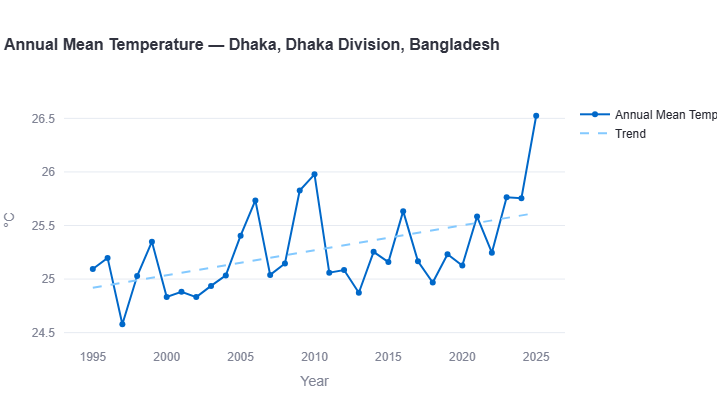
Dhaka's annual mean temperature shows the clearest, steadiest warming trajectory of any city examined in this series so far. From a range around 25.0–25.3°C in the mid-1990s, the trend climbs fairly consistently through the record, with notable warm years in 2006 (25.75°C), 2009 (25.85°C), and 2010 (nearly 26.0°C). The final year in the dataset, 2025, stands out sharply — spiking to approximately 26.5°C, the highest point in the entire 30-year record.
Key Figure: Warming Rate
This is more than double Karachi's annual warming rate (0.13°C/decade) and roughly twice Delhi's (approximately 0.15°C/decade) — making Dhaka, by this measure, the fastest-warming of the three major South Asian cities examined in this series. Over 30 years, this represents nearly 0.9°C of cumulative warming — a substantial shift for a low-lying delta city already grappling with sea-level and flooding pressures.
Extreme Heat: Days Above 40°C
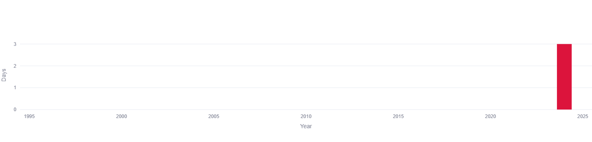
Here Dhaka diverges sharply from both Karachi and Delhi: for essentially the entire 30-year record, Dhaka records zero days per year with maximum temperature reaching 40°C. The only exception in the entire dataset is a single recent year — around 2023 — which recorded approximately 3 days above that threshold.
This makes sense given Dhaka's humid, delta climate, which behaves very differently from Karachi's coastal-desert exposure or Delhi's continental extremes. But the appearance of any 40°C+ days at all, in a city that essentially never saw them before, is itself notable — worth monitoring in coming years as a potential early signal, even though a single data point isn't yet a trend.
Annual Total Precipitation
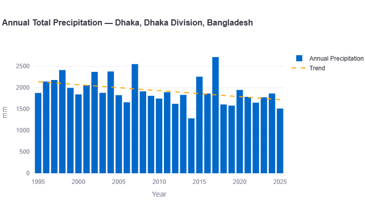
This is where Dhaka's story becomes genuinely distinct from the rest of this series. Annual rainfall totals in the mid-1990s sat around 2,100–2,200mm — already among the highest of any city in this series, reflecting Bangladesh's position deep in the monsoon belt. But rather than climbing further, as seen in Karachi and Delhi, the trend line declines steadily across the three decades, down to roughly 1,700–1,750mm by 2025.
Individual years remain highly variable — a dramatic spike to over 2,700mm appears around 2017, and another near 2,550mm around 2007 — but these high-rainfall years become noticeably less frequent in the second half of the record, with several recent years (2014, 2019, 2020, 2025) falling to some of the lowest annual totals in the entire dataset, around 1,300–1,600mm.
Key Figure: Precipitation Trend
This is a substantial decline — and it runs directly counter to the pattern found in both Karachi (+88.7mm/decade) and Delhi (approximately +35mm/decade). Dhaka's declining precipitation trend is a genuinely important and somewhat counterintuitive finding, given Bangladesh's broader reputation for flood risk. It suggests that even as extreme individual flood events continue to occur, the underlying long-term rainfall baseline in the capital may actually be trending drier.
Seasonal & Monsoon Trend
Breaking the data down by season — Winter (December–February), Pre-Monsoon/Hot (March–May), Monsoon (June–September), and Post-Monsoon (October–November) — reveals where this overall rainfall decline is actually concentrated.
Winter (Dec-Feb)
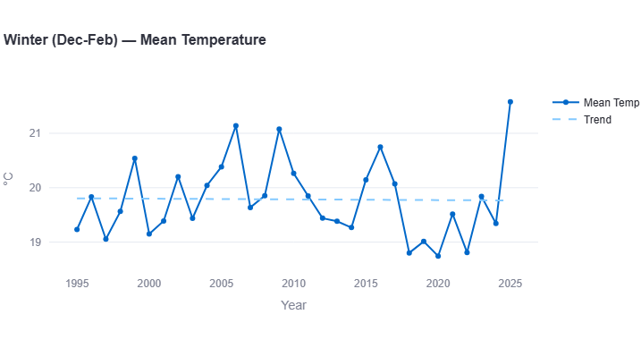
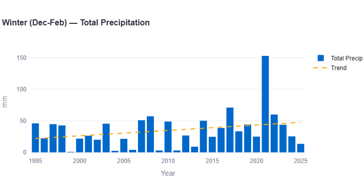
Dhaka's winter temperatures stay relatively flat for most of the record, hovering around 19.5–20°C, with a notable dip through 2017–2021 (as low as 18.7°C) before a sharp final-year spike to approximately 21.6°C in 2025 — the warmest winter in the dataset by a wide margin.
Key Figures: Winter
Warming rate: approximately +0.05°C per decade (nearly flat)
Precipitation trend: approximately +9mm per decade
Winter is the one season where Dhaka's precipitation trend actually runs positive, unlike the declining pattern seen annually and in most other seasons — though this is driven substantially by one dramatic outlier year around 2021, which spiked to roughly 152mm, more than double any other winter in the record. Outside that single year, most winters bring between 0mm and 55mm.
Pre-Monsoon / Hot (Mar-May)
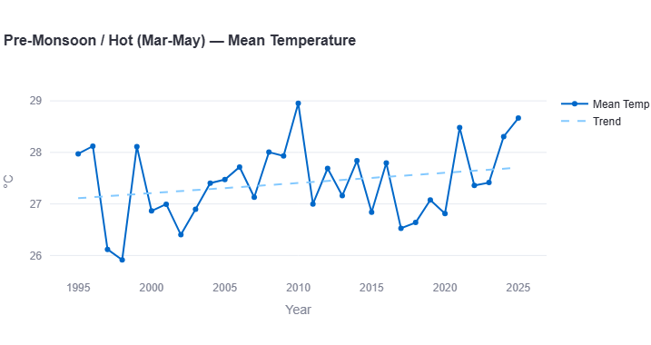
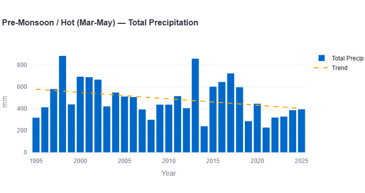
Pre-monsoon temperatures show a clear warming trend, rising from around 27.0°C in the mid-1990s to roughly 27.7°C by 2025, with a striking peak of nearly 29°C in 2010 — the hottest pre-monsoon season in the entire record — and a low point of just under 26°C in 1998.
Key Figures: Pre-Monsoon
Warming rate: approximately +0.23°C per decade
Precipitation trend: approximately −60mm per decade (declining)
Pre-monsoon rainfall shows one of the steepest declines of any season — from a trend-line baseline near 580mm in the mid-1990s down to roughly 400mm by 2025. The record's most extreme outlier is a spike to nearly 890mm around 1998, more than double a typical pre-monsoon season, alongside another notable peak near 860mm around 2013 — but these high-rainfall pre-monsoon years become visibly less frequent in the record's later half.
Monsoon (Jun-Sep)
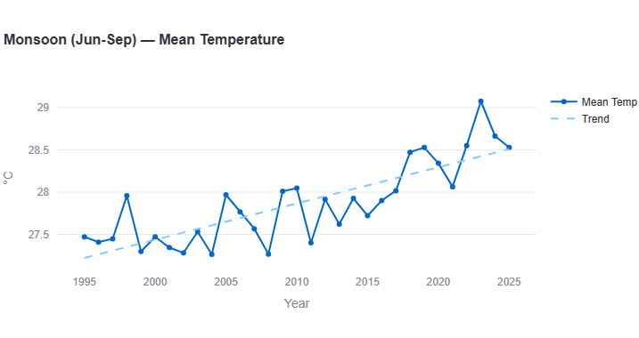
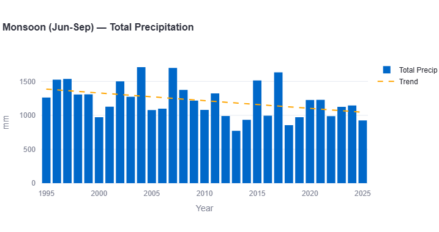
The monsoon season shows Dhaka's fastest warming trend of any season — climbing from around 27.3°C in the mid-1990s to roughly 28.5°C by 2025, with a sharp peak above 29°C around 2023.
Key Figures: Monsoon
Warming rate: approximately +0.40°C per decade
Precipitation trend: approximately −117mm per decade (declining)
This is the season carrying most of Dhaka's overall precipitation decline, and it's a genuinely striking finding: a warming monsoon paired with a substantially declining monsoon rainfall trend is the opposite pattern from what we found in both Karachi and Delhi, where the monsoon season showed the strongest rainfall increases. Monsoon totals fell from a trend-line baseline near 1,400mm in the mid-1990s to roughly 1,050mm by 2025 — even as individual peak years (around 2004 and 2007, both near 1,700mm) remain dramatic, they occur less frequently later in the record.
Post-Monsoon (Oct-Nov)
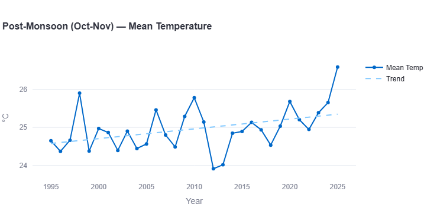
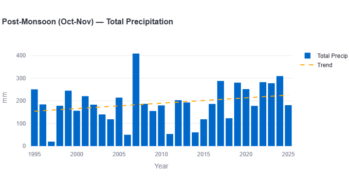
Post-monsoon temperatures show strong warming, rising from around 24.6°C in the mid-1990s to roughly 25.7°C by 2025, with the final recorded year spiking sharply to approximately 27.2°C — by far the warmest post-monsoon period on record, echoing the same late-record temperature spike seen in the annual and winter charts.
Key Figures: Post-Monsoon
Warming rate: approximately +0.37°C per decade
Precipitation trend: approximately +23mm per decade
Unlike most other seasons, post-monsoon precipitation trends slightly upward — driven substantially by an extreme outlier year around 2007, which spiked to roughly 410mm, more than double any other year in this season's record. Outside that single spike, most post-monsoon periods bring between 50mm and 250mm, with a generally rising baseline in more recent years (2017–2024 show more consistently elevated totals than the 1995–2010 window).
What This Means for Dhaka
Taken together, Dhaka's data reveals a city warming faster than its regional neighbors, with a rainfall pattern that is genuinely more complex than the "wetter monsoon" story found elsewhere in South Asia:
- Dhaka is the fastest-warming city in this series so far. Its annual warming rate (~0.30°C/decade) roughly doubles both Karachi's and Delhi's, with the monsoon and post-monsoon seasons warming fastest of all.
- Declining rainfall doesn't mean declining flood risk. A lower long-term rainfall trend can still coexist with severe individual flood events — Bangladesh's flood risk is driven as much by river systems, storm surge, and land subsidence as by local rainfall totals alone. This data speaks only to Dhaka's own precipitation trend, not the country's broader flood risk profile.
- The monsoon's changing character deserves attention. A monsoon season that is both warming quickly and delivering less rainfall over time is a very different water-planning challenge than the intensifying-but-increasing monsoon pattern found in Karachi and Delhi.
- The very recent (2023-2025) spike across multiple seasons is worth watching closely. Several charts show their single highest point in the entire 30-year record occurring in the final 1-3 years of data — too recent to call a confirmed new trend, but a pattern worth monitoring as more data accumulates.
Comparing Three South Asian Capitals
With Karachi, Delhi, and now Dhaka analyzed using the same methodology, a direct comparison becomes possible — and each pairing tells a different story.
Dhaka vs. Karachi: Delta Warming vs. Coastal Calm
Of the two, Dhaka is warming more than twice as fast (~0.30°C/decade) as Karachi (0.13°C/decade) — but Karachi's rainfall is intensifying dramatically (+88.7mm/decade) while Dhaka's is declining (~−140mm/decade). Karachi's coastal position moderates its temperature swings; Dhaka's inland delta exposure appears to be driving faster warming, even as its overall rainfall trend moves in the opposite direction from what a warming atmosphere might typically suggest. Read the full Karachi climate trend report for the complete seasonal breakdown.
Dhaka vs. Delhi: Two Very Different Rainfall Stories
Dhaka and Delhi warm at a broadly similar pace in some seasons — both show their fastest warming outside the core monsoon window (Dhaka's monsoon and post-monsoon seasons both warm around 0.37–0.40°C/decade, close to Delhi's post-monsoon rate of ~0.40°C/decade) — but their rainfall trends diverge sharply. Delhi's annual precipitation is rising modestly (~+35mm/decade), while Dhaka's is falling substantially (~−140mm/decade). Notably, Delhi records 20–50+ extreme-heat days above 40°C most years, while Dhaka records essentially none — a reflection of Delhi's continental exposure versus Dhaka's humid delta climate. See the full Delhi climate trend report for the seasonal detail behind these numbers.
Dhaka vs. Colombo: Rapid Drying vs. Steady Wetting
Of all four cities in this series, Dhaka and Colombo present the sharpest rainfall contrast. Dhaka warms almost twice as fast (~0.30°C/decade vs. ~0.15°C/decade) but its rainfall is declining (~−140mm/decade); Colombo warms more slowly but its rainfall is rising in every single season (~+170mm/decade annually), from an already much higher baseline (2,200–3,000mm versus Dhaka's 1,300–2,700mm). Read the full Colombo climate trend report to see why.
Dhaka vs. Kathmandu: Fastest Warming vs. Barely Warming at All
This is the widest gap in the entire series. Dhaka is the fastest-warming city studied (~0.30°C/decade); Kathmandu, by contrast, shows essentially no annual warming trend, with its winter and pre-monsoon seasons actually cooling. The two cities do share one thing: both have a season moving in a direction that doesn't fit the region's broader story — Dhaka's declining rainfall despite rapid warming, and Kathmandu's cooling seasons despite an otherwise-warming monsoon. See the full Kathmandu climate trend report for the complete picture.
| Metric | Karachi | Delhi | Dhaka |
|---|---|---|---|
| Annual warming rate | +0.13°C/decade | ~+0.15°C/decade | ~+0.30°C/decade |
| Annual precipitation trend | +88.7mm/decade | ~+35mm/decade | ~−140mm/decade |
| Fastest-warming season | Monsoon (+0.20) | Post-Monsoon (~+0.40) | Monsoon (~+0.40) |
| Monsoon precipitation trend | +88.0mm/decade | ~+25mm/decade | ~−117mm/decade |
| Extreme heat days (≥40°C) | 0-5 days/year | 20-50+ days/year | ~0 days/year |
The contrast is striking: three South Asian capitals, three genuinely different climate trajectories — coastal Karachi warming slowest but raining dramatically more; continental Delhi facing extreme and frequent heat; and delta-city Dhaka warming fastest of all while its rainfall trends the opposite direction from its neighbors.
Search any South Asian city and see its own temperature, rainfall, and monsoon trends, built from 30 years of data.
Open the Interactive Dashboard →Data Source & Methodology
All figures in this report are derived from the Open-Meteo Historical Weather API, built on ERA5 and ERA5-Land reanalysis data produced by the European Centre for Medium-Range Weather Forecasts (ECMWF) through the Copernicus Climate Change Service. Trend rates are estimated by reading the linear regression trend line plotted on each chart across the full 1995–2025 period; where a chart did not display a printed decade-rate figure, the value given here is a closely reasoned visual estimate, marked "approximately."
Seasonal boundaries follow the standard South Asian meteorological convention: Winter (December–February), Pre-Monsoon/Hot (March–May), Monsoon (June–September), and Post-Monsoon (October–November).
As with any reanalysis dataset, figures represent a grid-cell average (roughly 9–25km resolution) rather than a single-point station reading, and may differ from any individual weather station's direct measurements.
Frequently Asked Questions
Is Dhaka warming faster than other South Asian capitals?
Based on this data, yes — Dhaka's estimated annual warming rate of approximately 0.30°C per decade is roughly double the rates found in both Karachi (0.13°C/decade) and Delhi (approximately 0.15°C/decade).
Is Dhaka getting more or less rain?
Less, according to the 30-year trend — annual precipitation shows an estimated decline of approximately 140mm per decade, driven substantially by a declining monsoon-season rainfall trend, which runs counter to the increasing monsoon rainfall pattern found in Karachi and Delhi.
Does declining rainfall mean Dhaka's flood risk is decreasing?
Not necessarily. This data reflects only Dhaka's own local precipitation trend. Bangladesh's broader flood risk is shaped significantly by river systems, storm surge, and land subsidence, factors not captured in a single city's rainfall trend alone.
Does Dhaka experience extreme heat above 40°C?
Historically, essentially never — the 30-year record shows zero days per year at or above 40°C for nearly the entire period, with a single exception of approximately 3 days recorded around 2023.
Which season is warming fastest in Dhaka?
The monsoon season (June-September) shows the fastest estimated warming rate, at approximately 0.40°C per decade, closely followed by the post-monsoon season at approximately 0.37°C per decade.
How does Dhaka's climate trend compare to Karachi and Delhi?
Dhaka is warming faster than both cities but shows a declining rainfall trend, while Karachi and Delhi both show increasing rainfall trends — making Dhaka's climate trajectory genuinely distinct within this three-city comparison.
See how Dhaka compares across the region in our South Asia climate trend report, covering all 8 cities in this series.